Welcome to Radio Wave Physics. Just click on the little red "See More..." box to read more about radio waves. Then click on the "Next Slide:" button to scroll down to the next page.
The most commonly known radio waves are AM and FM waves, however there are other waves reserved for television stations, walkie-talkies, and radar. These information-transferring waves have longer wavelengths than visible light. While the particle that the wave sends moves up and down in a transverse fashion, information can be sent on theses waves in either transverse or longitudinal form. In the chart to the left, visible light has the shortest frequency, which is between 7.9×1014 and 4×1014 Hertz. Data transferring frequencies have longer wavelengths and are less frequent than visible light. Microwaves are located in the infrared zone, which is between 1011 and 109 Hertz. Cell phone signals are located on the longer side of infrared waves and in the shorter side of radar waves. FM frequencies lie around 108 Hz. TV frequencies are found around 5×107. AM waves lie around 106 Hz. Broadcasting at sound frequencies are found in spots much lower than these.

In order to test the properties of FM antennas, I conducted an experiment involving angles. For this experiment I recorded the direction, north, south, east, or west, at which the antenna was pointed that sounded best for each FM radio station, and worst for each station. The purpose was to figure out how a wave hits an antenna to make it work at its best. An antenna works when a wave pushes the positive and negative fields up and down on contact. This suggests that by positioning an antenna perpendicular to an incoming wave would work best. During experimentation I realized it is best to have the antenna positioned perpendicular to the wave's direction, but there is no conclusive evidence to say that this is the best way for waves to be picked up because there are a few counter examples.